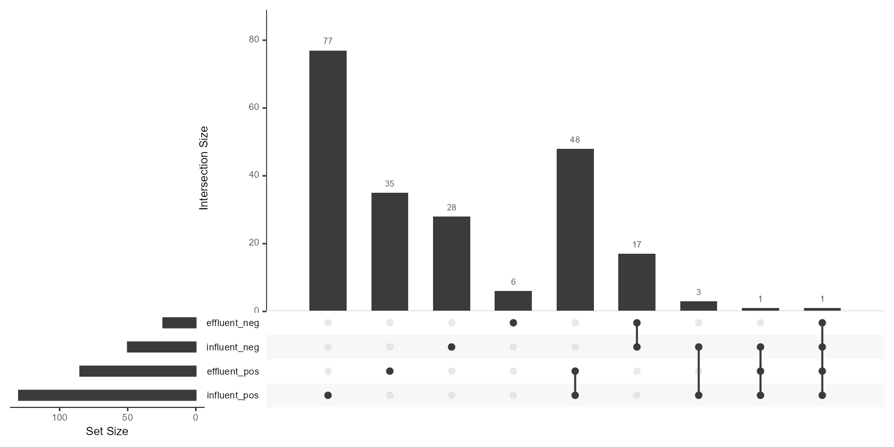

Evaluation of Wastewater Ozonation with Mass Spectrometry
Ricardo Cunha
cunha@iuta.de09 October, 2024
Source:vignettes/articles/demo_ozonation_project.Rmd
demo_ozonation_project.RmdIntroduction
In this article we demonstrate how StreamFind can be used to evaluate ozonation of secondary wastewater effluent (i.e., effluent of the aerated biological treatment) using mass spectrometry (MS). A set of 18 mzML files are used, representing blank, influent and effluent measurements in triplicate for both positive and negative ionization modes.
basename(files) [1] "01_tof_ww_is_neg_blank-r001.mzML"
[2] "01_tof_ww_is_neg_blank-r002.mzML"
[3] "01_tof_ww_is_neg_blank-r003.mzML"
[4] "01_tof_ww_is_pos_blank-r001.mzML"
[5] "01_tof_ww_is_pos_blank-r002.mzML"
[6] "01_tof_ww_is_pos_blank-r003.mzML"
[7] "02_tof_ww_is_neg_influent-r001.mzML"
[8] "02_tof_ww_is_neg_influent-r002.mzML"
[9] "02_tof_ww_is_neg_influent-r003.mzML"
[10] "02_tof_ww_is_pos_influent-r001.mzML"
[11] "02_tof_ww_is_pos_influent-r002.mzML"
[12] "02_tof_ww_is_pos_influent-r003.mzML"
[13] "03_tof_ww_is_neg_o3sw_effluent-r001.mzML"
[14] "03_tof_ww_is_neg_o3sw_effluent-r002.mzML"
[15] "03_tof_ww_is_neg_o3sw_effluent-r003.mzML"
[16] "03_tof_ww_is_pos_o3sw_effluent-r001.mzML"
[17] "03_tof_ww_is_pos_o3sw_effluent-r002.mzML"
[18] "03_tof_ww_is_pos_o3sw_effluent-r003.mzML"The showcase will use the StreamFind MassSpecEngine, which encapsulates all tools required for parsing, storing, processing and visualizing MS data. Note that not all methods/functions will be shown as the demonstration focuses of the workflow to assess wastewater ozonation. Other processing methods are available in the StreamFind package and can be found in the StreamFind reference documentation.
MassSpecEngine
The R6 MassSpecEngine
class object is created using the MassSpecEngine$new(), as
shown below. The argument analyses can be used to add
directly the set of mzML files. Note that the original vendor
files were converted to mzML format using the convert_ms_files()
function, which uses the msConvert command line from ProteoWizard.
# Creates a MassSpecEngine from mzML files
ms <- MassSpecEngine$new(analyses = files)
# Prints in console a summary of the MassSpecEngine
ms
MassSpecEngine
name NA
date 2024-10-09 21:16:08.882884
file NA
Workflow empty
StreamFind::MassSpecAnalyses
analysis replicate blank
<char> <char> <char>
1: 01_tof_ww_is_neg_blank-r001 01_tof_ww_is_neg_blank <NA>
2: 01_tof_ww_is_neg_blank-r002 01_tof_ww_is_neg_blank <NA>
3: 01_tof_ww_is_neg_blank-r003 01_tof_ww_is_neg_blank <NA>
4: 01_tof_ww_is_pos_blank-r001 01_tof_ww_is_pos_blank <NA>
5: 01_tof_ww_is_pos_blank-r002 01_tof_ww_is_pos_blank <NA>
6: 01_tof_ww_is_pos_blank-r003 01_tof_ww_is_pos_blank <NA>
7: 02_tof_ww_is_neg_influent-r001 02_tof_ww_is_neg_influent <NA>
8: 02_tof_ww_is_neg_influent-r002 02_tof_ww_is_neg_influent <NA>
9: 02_tof_ww_is_neg_influent-r003 02_tof_ww_is_neg_influent <NA>
10: 02_tof_ww_is_pos_influent-r001 02_tof_ww_is_pos_influent <NA>
11: 02_tof_ww_is_pos_influent-r002 02_tof_ww_is_pos_influent <NA>
12: 02_tof_ww_is_pos_influent-r003 02_tof_ww_is_pos_influent <NA>
13: 03_tof_ww_is_neg_o3sw_effluent-r001 03_tof_ww_is_neg_o3sw_effluent <NA>
14: 03_tof_ww_is_neg_o3sw_effluent-r002 03_tof_ww_is_neg_o3sw_effluent <NA>
15: 03_tof_ww_is_neg_o3sw_effluent-r003 03_tof_ww_is_neg_o3sw_effluent <NA>
16: 03_tof_ww_is_pos_o3sw_effluent-r001 03_tof_ww_is_pos_o3sw_effluent <NA>
17: 03_tof_ww_is_pos_o3sw_effluent-r002 03_tof_ww_is_pos_o3sw_effluent <NA>
18: 03_tof_ww_is_pos_o3sw_effluent-r003 03_tof_ww_is_pos_o3sw_effluent <NA>
type polarity spectra chromatograms
<char> <char> <num> <num>
1: MS/MS-DDA negative 1914 0
2: MS/MS-DDA negative 1932 0
3: MS/MS-DDA negative 1941 0
4: MS/MS-DDA positive 2504 0
5: MS/MS-DDA positive 2491 0
6: MS/MS-DDA positive 2504 0
7: MS/MS-DDA negative 1984 0
8: MS/MS-DDA negative 1995 0
9: MS/MS-DDA negative 1993 0
10: MS/MS-DDA positive 2131 0
11: MS/MS-DDA positive 2126 0
12: MS/MS-DDA positive 2124 0
13: MS/MS-DDA negative 1909 0
14: MS/MS-DDA negative 1921 0
15: MS/MS-DDA negative 1924 0
16: MS/MS-DDA positive 2046 0
17: MS/MS-DDA positive 2052 0
18: MS/MS-DDA positive 2048 0
Results empty ProjectHeaders
Project headers (e.g., name, author and description) can be added to
the MassSpecEngine$headers by creating an S7
ProjectHeaders class object as shown below. The arguments
(i.e. elements) of the ProjectHeaders can be anything but must
have length one.
# Adds headers to the MassSpecEngine
ms$headers <- StreamFind::ProjectHeaders(
name = "Wastewater Ozonation Showcase",
author = "Ricardo Cunha",
description = "Demonstration project"
)
# Gets and shows the headers
show(ms$headers)
StreamFind::ProjectHeaders(4 elements)
name: Wastewater Ozonation Showcase
author: Ricardo Cunha
description: Demonstration project
date: 2024-10-09 21:16:09.282943
# Gets the MassSpecEngine date
ms$headers$date[1] "2024-10-09 21:16:09 CEST"Replicates and blanks
The analysis replicate names and the associated blank replicate name
can be amended in the MassSpecEngine, as shown below.
Alternatively, a data.frame with column names
file, replicate and blank could be added as
the analyses argument in
MassSpecEngine$new(analyses = files) to have directly the
replicate and blank replicate names assigned (more details here).
# Character vector with analysis replicate names
rpls <- c(
rep("blank_neg", 3),
rep("blank_pos", 3),
rep("influent_neg", 3),
rep("influent_pos", 3),
rep("effluent_neg", 3),
rep("effluent_pos", 3)
)
# Character vector with associated blank replicate names
# Note that the order should match the respective replicate
blks <- c(
rep("blank_neg", 3),
rep("blank_pos", 3),
rep("blank_neg", 3),
rep("blank_pos", 3),
rep("blank_neg", 3),
rep("blank_pos", 3)
)
# Amends replicate and blank names
ms$analyses$replicates <- rpls
ms$analyses$blanks <- blks
# Replicates and blanks were amended
ms$analyses$info[, 1:5] analysis replicate blank type
<char> <char> <char> <char>
1: 01_tof_ww_is_neg_blank-r001 blank_neg blank_neg MS/MS-DDA
2: 01_tof_ww_is_neg_blank-r002 blank_neg blank_neg MS/MS-DDA
3: 01_tof_ww_is_neg_blank-r003 blank_neg blank_neg MS/MS-DDA
4: 01_tof_ww_is_pos_blank-r001 blank_pos blank_pos MS/MS-DDA
5: 01_tof_ww_is_pos_blank-r002 blank_pos blank_pos MS/MS-DDA
6: 01_tof_ww_is_pos_blank-r003 blank_pos blank_pos MS/MS-DDA
7: 02_tof_ww_is_neg_influent-r001 influent_neg blank_neg MS/MS-DDA
8: 02_tof_ww_is_neg_influent-r002 influent_neg blank_neg MS/MS-DDA
9: 02_tof_ww_is_neg_influent-r003 influent_neg blank_neg MS/MS-DDA
10: 02_tof_ww_is_pos_influent-r001 influent_pos blank_pos MS/MS-DDA
11: 02_tof_ww_is_pos_influent-r002 influent_pos blank_pos MS/MS-DDA
12: 02_tof_ww_is_pos_influent-r003 influent_pos blank_pos MS/MS-DDA
13: 03_tof_ww_is_neg_o3sw_effluent-r001 effluent_neg blank_neg MS/MS-DDA
14: 03_tof_ww_is_neg_o3sw_effluent-r002 effluent_neg blank_neg MS/MS-DDA
15: 03_tof_ww_is_neg_o3sw_effluent-r003 effluent_neg blank_neg MS/MS-DDA
16: 03_tof_ww_is_pos_o3sw_effluent-r001 effluent_pos blank_pos MS/MS-DDA
17: 03_tof_ww_is_pos_o3sw_effluent-r002 effluent_pos blank_pos MS/MS-DDA
18: 03_tof_ww_is_pos_o3sw_effluent-r003 effluent_pos blank_pos MS/MS-DDA
polarity
<char>
1: negative
2: negative
3: negative
4: positive
5: positive
6: positive
7: negative
8: negative
9: negative
10: positive
11: positive
12: positive
13: negative
14: negative
15: negative
16: positive
17: positive
18: positiveProcessingSettings
Data processing is performed by steps according to
ProcessingSettings. S7 ProcessingSettings class
objects are obtained via the respective [Engine type]Settings_[module name]_[algorithm name]
constructor functions, attributing the respective subclass. Below we
obtain the ProcessingSettings for the step
FindFeatures using the algorithm openms. The
parameters for each processing module can be changed via the constructor
arguments. Documentation for each ProcessingSettings subclass
can be found in the StreamFind
reference documentation.
# Gets ProcessingSettings for finding features using the openms algorithm
ffs <- MassSpecSettings_FindFeatures_openms(
noiseThrInt = 1000,
chromSNR = 3,
chromFWHM = 7,
mzPPM = 15,
reEstimateMTSD = TRUE,
traceTermCriterion = "sample_rate",
traceTermOutliers = 5,
minSampleRate = 1,
minTraceLength = 4,
maxTraceLength = 70,
widthFiltering = "fixed",
minFWHM = 4,
maxFWHM = 35,
traceSNRFiltering = TRUE,
localRTRange = 0,
localMZRange = 0,
isotopeFilteringModel = "none",
MZScoring13C = FALSE,
useSmoothedInts = FALSE,
extraOpts = NULL,
intSearchRTWindow = 3,
useFFMIntensities = FALSE,
verbose = FALSE
)
# Prints in console the details of the ProcessingSettings
show(ffs)
StreamFind::MassSpecSettings_FindFeatures_openms
engine MassSpec
method FindFeatures
algorithm openms
version 0.2.0
software openms
developer Oliver Kohlbacher
contact oliver.kohlbacher@uni-tuebingen.de
link https://openms.de/
doi https://doi.org/10.1038/nmeth.3959
parameters:
- noiseThrInt 1000
- chromSNR 3
- chromFWHM 7
- mzPPM 15
- reEstimateMTSD TRUE
- traceTermCriterion sample_rate
- traceTermOutliers 5
- minSampleRate 1
- minTraceLength 4
- maxTraceLength 70
- widthFiltering fixed
- minFWHM 4
- maxFWHM 35
- traceSNRFiltering TRUE
- localRTRange 0
- localMZRange 0
- isotopeFilteringModel none
- MZScoring13C FALSE
- useSmoothedInts FALSE
- extraOpts
- intSearchRTWindow 3
- useFFMIntensities FALSE
- verbose FALSE
# Creates a Workflow object with all processing steps for the MS data
workflow <- StreamFind::Workflow(
list(
# Find features using the openms algorithm, created above
ffs,
# Annotation of natural isotopes and adducts
MassSpecSettings_AnnotateFeatures_StreamFind(
rtWindowAlignment = 0.3,
maxIsotopes = 8,
maxCharge = 2,
maxGaps = 1
),
# Excludes annotated isotopes and adducts
MassSpecSettings_FilterFeatures_StreamFind(
excludeIsotopes = TRUE,
excludeAdducts = TRUE
),
# Grouping features across analyses
MassSpecSettings_GroupFeatures_openms(
rtalign = FALSE,
QT = FALSE,
maxAlignRT = 5,
maxAlignMZ = 0.008,
maxGroupRT = 5,
maxGroupMZ = 0.008,
extraOptsRT = NULL,
extraOptsGroup = NULL,
verbose = FALSE
),
# Filter feature groups with maximum intensity below 5000 counts
MassSpecSettings_FilterFeatures_StreamFind(
minIntensity = 5000
),
# Fill features with missing data
# Reduces false negatives
MassSpecSettings_FillFeatures_StreamFind(
withinReplicate = FALSE,
rtExpand = 2,
mzExpand = 0.0005,
minTracesIntensity = 1000,
minNumberTraces = 6,
baseCut = 0.3,
minSignalToNoiseRatio = 3,
minGaussianFit = 0.2
),
# Calculate quality metrics for each feature
MassSpecSettings_CalculateFeaturesQuality_StreamFind(
filtered = FALSE,
rtExpand = 2,
mzExpand = 0.0005,
minTracesIntensity = 1000,
minNumberTraces = 6,
baseCut = 0
),
# Filter features based on minimum signal-to-noise ratio (s/n)
# The s/n is calculated using the CalculateFeaturesQuality method
MassSpecSettings_FilterFeatures_StreamFind(
minSnRatio = 5
),
# Filter features using other parameters via the patRoon package
MassSpecSettings_FilterFeatures_patRoon(
maxReplicateIntRSD = 40,
blankThreshold = 5,
absMinReplicateAbundance = 3
),
# Finds internal standards in the MS data
# db_is is a data.table with the
# name, mass and expected retention time of
# spiked internal standards, as shown below
MassSpecSettings_FindInternalStandards_StreamFind(
database = db_is,
ppm = 8,
sec = 10
),
# Loads MS1 for features not filtered
MassSpecSettings_LoadFeaturesMS1_StreamFind(
filtered = FALSE
),
# Loads MS2 for features not filtered
MassSpecSettings_LoadFeaturesMS2_StreamFind(
filtered = FALSE
),
# Loads feature extracted ion chromatograms (EIC)
MassSpecSettings_LoadFeaturesEIC_StreamFind(
filtered = FALSE
),
# Performs suspect screening using the StreamFind algorithm
# db_with_ms2 is a database with suspect chemical standards
# includes MS2 data (i.e., fragmentation pattern) from standards
MassSpecSettings_SuspectScreening_StreamFind(
database = db_with_ms2,
ppm = 10,
sec = 15,
ppmMS2 = 10,
minFragments = 3
)
)
)
show(workflow)
Workflow
1: FindFeatures (openms)
2: AnnotateFeatures (StreamFind)
3: FilterFeatures (StreamFind)
4: GroupFeatures (openms)
5: FilterFeatures (StreamFind)
6: FillFeatures (StreamFind)
7: CalculateFeaturesQuality (StreamFind)
8: FilterFeatures (StreamFind)
9: FilterFeatures (patRoon)
10: FindInternalStandards (StreamFind)
11: LoadFeaturesMS1 (StreamFind)
12: LoadFeaturesMS2 (StreamFind)
13: LoadFeaturesEIC (StreamFind)
14: SuspectScreening (StreamFind)
# Accessing and printing the 7th ProcessingSettings object from the workflow
# show(workflow[[7]])Then, the Workflow object can be added to the MassSpecEngine. Note that the order will matter when the workflow is applied!
# Adds the workflow to the engine. The order matters!
ms$workflow <- workflow
# Printing the data processing workflow
ms$print_workflow()
Workflow
1: FindFeatures (openms)
2: AnnotateFeatures (StreamFind)
3: FilterFeatures (StreamFind)
4: GroupFeatures (openms)
5: FilterFeatures (StreamFind)
6: FillFeatures (StreamFind)
7: CalculateFeaturesQuality (StreamFind)
8: FilterFeatures (StreamFind)
9: FilterFeatures (patRoon)
10: FindInternalStandards (StreamFind)
11: LoadFeaturesMS1 (StreamFind)
12: LoadFeaturesMS2 (StreamFind)
13: LoadFeaturesEIC (StreamFind)
14: SuspectScreening (StreamFind)
run_workflow()
The Workflow can be applied by run_workflow(),
as demonstrated below. Note that with run_workflow(), the
processing modules are applied with the same order as they were
added.
# Runs all ProcessingSettings added
ms$run_workflow()Results
The created features and feature groups can be inspected as
data.table objects or plotted by dedicated methods in the
MassSpecEngine. Internally, the MassSpecEngine stores
the results in the NTS object, which can be accessed with
MassSpecEngine$nts. Yet, the engine interface is
recommended for accessing the results. However, the NTS object
can be used for more advanced operations, such as exporting the results
to a database or other formats or use the native objects from other
packages (e.g., patRoon) as we demonstrated further in this article.
data.table objects
The features and feature groups can be obtained as
data.table with the
MassSpecEngine$get_features() and
MassSpecEngine$get_groups() methods. The methods also allow
to look for specific features/feature groups using mass, mass-to-charge
ratio, retention time and drift time targets, as show below for a small
set of compound targets where mass and retention time expected values
are known. Note that drift time is only applicable for MS data with ion
mobility separation.
db name formula mass rt tag
<char> <char> <num> <int> <char>
1: 4N-Acetylsulfadiazine C12H12N4O3S 292.0630 905 S
2: Metoprolol C15H25NO3 267.1834 915 S
3: Sulfamethoxazole C10H11N3O3S 253.0521 1015 S
4: Bisoprolol C18H31NO4 325.2253 955 S
5: 4N-Acetylsulfamethoxazole C12H13N3O4S 295.0627 1011 S
6: Carbamazepine C15H12N2O 236.0950 1079 S
7: Terbutryn C10H19N5S 241.1361 1126 S
8: Losartan C22H23ClN6O 422.1622 1095 S
9: Candesartan C24H20N6O3 440.1597 1097 S
10: Isoproturon C12H18N2O 206.1419 1152 S
11: Diuron C9H10Cl2N2O 232.0170 1160 S
12: Bezafibrat C19H20ClNO4 361.1081 1164 S
13: Valsartan C24H29N5O3 435.2270 1177 S
14: Tebuconazole C16H22ClN3O 307.1451 1267 S
15: Diclofenac C14H11Cl2NO2 295.0167 1255 S
16: Propiconazole C15H17Cl2N3O2 341.0698 1308 S
17: Flufenacet C14H13F4N3O2S 363.0665 1296 S
18: Ibuprofen C13H18O2 206.1307 1152 S
19: CBZD C15H14N2O3 270.1004 936 S
# Compounds are searched by monoisotopic mass and retention time
# ppm and sec set the mass (im ppm) and time (in seconds) allowed deviation, respectively
# average applies a mean to the intensities in each analysis replicate group
ms$get_groups(mass = db, ppm = 10, sec = 15, average = TRUE) group name effluent_pos influent_neg influent_pos
<char> <char> <num> <num> <num>
1: M236_R1079_292 Carbamazepine 0.00 0.000 66019.723
2: M253_R1015_479 Sulfamethoxazole 0.00 0.000 9679.877
3: M267_R916_636 Metoprolol 15409.08 0.000 49655.950
4: M295_R1256_1106 Diclofenac 0.00 7786.457 19602.253
5: M325_R957_1536 Bisoprolol 13762.82 0.000 48375.420
6: M440_R1097_2691 Candesartan 22512.84 34920.950 112540.650Already by inspection of the data.table, it is possible
to see compounds detected in the influent but not in the effluent (e.g.,
Carbamazepine) or compounds that are appear to be reduced during
ozonation (e.g., Metoprolol). Since positive and negative ionization
mode were combined, there are compounds that appear in both polarities
and are grouped by neutral monoisotopic mass (e.g., Candesartan and
Diclofenac).
plot_groups methods
For a better overview of the results, the method
MassSpecEngine$plot_groups() or even more detailed the
method MassSpecEngine$plot_groups_overview() can be
used.
# set legendNames to TRUE for using the names in db as legend
ms$plot_groups(mass = db, ppm = 10, sec = 15, legendNames = TRUE)
ms$plot_groups_overview(mass = db, ppm = 5, sec = 10, legendNames = TRUE)Filtered not removed
The FilterFeatures method was applied to filter features
according to defined conditions/thresholds. Yet, the filtered features
were not removed but just tagged as filtered. For instance, when the
method MassSpecEngine$get_groups() is run with
filtered argument set to TRUE, the filtered
features are also shown. Below, we search for the same compounds as
above but with the filtered argument set to
TRUE. Potential features from Valsartan are now returned
but were filtered due to low intensity. Note that when extracting
features based on basic parameters, i.e. mass and time, does not mean
that features are identified. The identification of features is a more
complex process and requires additional information, such as MS/MS data
as in the processing method suspect screening.
# Set filtered to TRUE for showing filtered features/feature groups
ms$get_groups(mass = db, ppm = 5, sec = 10, average = TRUE, filtered = TRUE) group name effluent_neg effluent_pos influent_neg
<char> <char> <num> <num> <num>
1: M236_R1079_292 Carbamazepine 0.000 0.00 0.000
2: M253_R1015_479 Sulfamethoxazole 0.000 0.00 0.000
3: M267_R916_636 Metoprolol 0.000 15409.08 0.000
4: M295_R1256_1106 Diclofenac 0.000 0.00 7786.457
5: M325_R957_1536 Bisoprolol 0.000 13762.82 0.000
6: M435_R1176_2658 Valsartan 3598.697 0.00 3164.295
7: M440_R1097_2691 Candesartan 6750.803 22512.84 34920.950
influent_pos
<num>
1: 66019.723
2: 9679.877
3: 49655.950
4: 19602.253
5: 48375.420
6: 0.000
7: 112540.650Internal Stanards
The method FindInternalStandards was applied for tagging
spiked internal standards and the results can be obtained with the
dedicated method MassSpecEngine$get_internal_standards() or
plotted as a quality overview using the method
MassSpecEngine$plot_internal_standards(), as shown below.
The plot gives an overview of the mass, retention time and intensity
variance of the internal standards across the analyses in the
project.
# List of spiked internal standards
db_is name formula mass rt tag
<char> <char> <num> <int> <char>
1: Cyclophosphamide-D6 C7[2]H6H9Cl2N2O2P 266.0625 1007 IS
2: Ibuprofen-D3 C13[2]H3H15O2 209.1495 1150 IS
3: Diclophenac-D4 C14[2]H4H7Cl2NO2 299.0418 1253 IS
4: Metoprolol-D7 C15[2]H7H18NO3 274.2274 915 IS
5: Sulfamethoxazol-D4 C10[2]H4H7N3O3S 257.0772 1015 IS
6: Isoproturon-D6 C12[2]H6H12N2O 212.1796 1149 IS
7: Diuron-D6 C9[2]H6H4Cl2N2O 238.0547 1157 IS
8: Carbamazepin-D10 C15[2]H10H2N2O 246.1577 1075 IS
9: Naproxen-D3 C14[2]H3H11O3 233.1131 1169 IS
# Gets the internal standards evaluation data.table
ms$get_internal_standards() name rt mass intensity area rtr mzr error_rt
<char> <num> <num> <num> <num> <num> <num> <num>
1: Carbamazepin-D10 1075 246.1586 456754 2496925 13.6 0.0017 0.0
2: Carbamazepin-D10 1075 246.1585 532430 2925329 15.1 0.0021 -0.3
3: Carbamazepin-D10 1075 246.1586 510457 2672523 14.3 0.0012 -0.2
4: Cyclophosphamide-D6 1007 266.0627 51652 245292 13.5 0.0018 -0.1
5: Cyclophosphamide-D6 1006 266.0627 56586 276668 10.2 0.0020 -1.1
6: Cyclophosphamide-D6 1007 266.0628 60849 293547 11.6 0.0019 -0.1
7: Diclophenac-D4 1254 299.0415 24035 123891 13.7 0.0018 0.6
8: Diclophenac-D4 1254 299.0423 51904 265863 11.2 0.0017 0.6
9: Diclophenac-D4 1254 299.0414 18131 104910 13.8 0.0027 1.1
10: Diclophenac-D4 1254 299.0424 48453 262399 12.8 0.0019 1.2
11: Diclophenac-D4 1254 299.0412 19708 111623 12.5 0.0027 0.8
12: Diclophenac-D4 1254 299.0423 51395 280790 12.0 0.0016 1.0
13: Diuron-D6 1157 238.0544 14884 79520 12.1 0.0015 -0.4
14: Diuron-D6 1157 238.0553 120342 623359 11.5 0.0014 0.0
15: Diuron-D6 1157 238.0542 14522 75994 11.7 0.0020 -0.3
16: Diuron-D6 1157 238.0553 130401 729836 13.0 0.0015 -0.1
17: Diuron-D6 1158 238.0545 15530 91640 10.5 0.0019 0.5
18: Diuron-D6 1157 238.0554 139260 779077 13.8 0.0012 0.1
19: Isoproturon-D6 1149 212.1806 1198379 6461139 12.5 0.0012 -0.5
20: Isoproturon-D6 1149 212.1808 1269561 7284356 14.9 0.0014 -0.5
21: Isoproturon-D6 1149 212.1807 1322756 7284879 14.8 0.0017 -0.3
22: Metoprolol-D7 915 274.2291 1581149 8159823 14.6 0.0017 0.1
23: Metoprolol-D7 914 274.2290 1497131 7504654 14.5 0.0026 -0.7
24: Metoprolol-D7 915 274.2289 1571305 7921583 14.9 0.0012 0.2
25: Sulfamethoxazol-D4 1015 257.0767 10741 57457 9.6 0.0015 -0.4
26: Sulfamethoxazol-D4 1014 257.0776 193814 960954 13.7 0.0015 -0.6
27: Sulfamethoxazol-D4 1014 257.0773 6566 32506 8.9 0.0027 -1.3
28: Sulfamethoxazol-D4 1014 257.0777 189113 1005469 14.6 0.0017 -1.2
29: Sulfamethoxazol-D4 1014 257.0778 187412 893062 13.6 0.0014 -1.1
30: Sulfamethoxazol-D4 1014 257.0769 7969 41277 10.5 0.0033 -0.8
31: Sulfamethoxazol-D4 1015 257.0780 204772 990155 14.0 0.0012 -0.2
name rt mass intensity area rtr mzr error_rt
error_mass rec iso_n iso_c replicate group freq
<num> <num> <num> <num> <char> <char> <int>
1: 3.5 1.0 2 14 blank_pos M246_R1075_389 3
2: 3.4 1.2 3 14 influent_pos M246_R1075_389 3
3: 3.7 1.1 3 14 effluent_pos M246_R1075_389 3
4: 0.8 1.0 3 9 blank_pos M266_R1007_620 3
5: 0.8 1.1 2 0 influent_pos M266_R1007_620 2
6: 1.1 1.2 2 4 effluent_pos M266_R1007_620 2
7: -1.1 1.0 3 15 blank_neg M299_R1254_1176 3
8: 1.8 1.0 4 13 blank_pos M299_R1254_1176 3
9: -1.3 0.8 3 12 influent_neg M299_R1254_1176 3
10: 1.9 1.0 4 16 influent_pos M299_R1254_1176 3
11: -1.9 0.9 3 11 effluent_neg M299_R1254_1176 3
12: 1.7 1.1 3 15 effluent_pos M299_R1254_1176 3
13: -1.4 1.0 1 0 blank_neg M238_R1157_309 3
14: 2.6 1.0 4 9 blank_pos M238_R1157_309 3
15: -2.1 1.0 2 0 influent_neg M238_R1157_309 3
16: 2.6 1.2 4 9 influent_pos M238_R1157_309 3
17: -0.9 1.2 2 0 effluent_neg M238_R1157_309 3
18: 2.8 1.2 4 8 effluent_pos M238_R1157_309 3
19: 4.6 1.0 3 11 blank_pos M212_R1149_103 3
20: 5.6 1.1 3 11 influent_pos M212_R1149_103 3
21: 5.3 1.1 3 11 effluent_pos M212_R1149_103 3
22: 6.2 1.0 3 14 blank_pos M274_R915_734 3
23: 5.7 0.9 3 14 influent_pos M274_R915_734 3
24: 5.4 1.0 3 13 effluent_pos M274_R915_734 3
25: -2.2 1.0 0 0 blank_neg M257_R1014_514 3
26: 1.7 1.0 3 19 blank_pos M257_R1014_514 3
27: 0.5 0.6 0 0 influent_neg M257_R1014_514 2
28: 1.8 1.0 3 19 influent_pos M257_R1014_514 3
29: 2.3 NA 3 21 influent_pos <NA> 1
30: -1.0 0.7 0 0 effluent_neg M257_R1014_514 3
31: 3.1 1.0 3 18 effluent_pos M257_R1014_514 3
error_mass rec iso_n iso_c replicate group freq
intensity_sd area_sd rtr_sd mzr_sd error_rt_sd error_mass_sd rec_sd
<num> <num> <num> <num> <num> <num> <num>
1: 16944 66611 1.4 0.0004 0.6 0.9 0.0
2: 16123 84288 1.3 0.0013 0.7 0.2 0.0
3: 2287 50630 0.1 0.0004 0.9 0.3 0.0
4: 1266 3523 0.1 0.0004 0.3 0.4 0.0
5: 326 23429 1.1 0.0011 0.4 0.8 0.1
6: 3280 19496 0.1 0.0010 0.4 0.3 0.1
7: 2398 7689 0.5 0.0006 0.6 0.7 0.0
8: 1420 4215 0.6 0.0002 0.5 0.8 0.0
9: 602 3947 1.2 0.0008 0.5 0.3 0.0
10: 371 13372 0.4 0.0009 0.3 0.3 0.1
11: 1502 3689 0.2 0.0009 0.9 0.8 0.0
12: 3152 3974 0.2 0.0007 0.4 0.3 0.0
13: 333 2927 1.0 0.0006 0.3 0.8 0.0
14: 1146 25424 0.2 0.0001 0.3 0.6 0.0
15: 717 3788 1.7 0.0005 0.4 0.2 0.0
16: 3699 24125 0.8 0.0004 0.7 0.6 0.0
17: 1642 3607 1.5 0.0001 0.8 0.4 0.0
18: 6556 22184 1.0 0.0003 0.5 0.4 0.0
19: 47806 249601 0.6 0.0002 0.6 1.0 0.0
20: 26888 259717 0.2 0.0002 0.6 1.2 0.0
21: 7909 16502 0.6 0.0005 0.2 0.4 0.0
22: 30940 348656 0.4 0.0004 0.3 0.7 0.0
23: 9479 68476 0.8 0.0011 0.3 0.7 0.0
24: 15361 639985 0.7 0.0003 0.4 0.5 0.1
25: 1711 6948 1.0 0.0002 0.5 0.7 0.0
26: 3299 67601 0.7 0.0002 0.3 0.4 0.0
27: 737 1085 2.3 0.0017 0.3 3.2 0.0
28: 3996 94418 1.9 0.0004 0.2 0.5 0.1
29: NA NA NA NA NA NA NA
30: 448 4146 1.0 0.0008 0.3 1.0 0.1
31: 9008 60927 0.9 0.0003 0.3 0.8 0.1
intensity_sd area_sd rtr_sd mzr_sd error_rt_sd error_mass_sd rec_sd
iso_n_sd iso_c_sd
<num> <num>
1: 0 1
2: 1 1
3: 0 1
4: 0 1
5: 0 0
6: 1 6
7: 0 3
8: 1 2
9: 1 10
10: 1 1
11: 1 10
12: 0 1
13: 1 0
14: 0 1
15: 0 0
16: 1 2
17: 0 0
18: 0 1
19: 0 0
20: 0 1
21: 0 0
22: 0 0
23: 0 0
24: 0 1
25: 0 0
26: 0 1
27: NA NA
28: 0 0
29: NA NA
30: 0 0
31: 0 1
iso_n_sd iso_c_sd
ms$plot_internal_standards()Quality control of spiked internal standards
Components
The method AnnotateFeatures was applied to annotate the
natural isotopes and adducts into components. Implementation of
annotation for in-source fragments is planned but not yet available with
the StreamFind algorithm. The method
MassSpecEngine$get_components() can be used to search for
components, as shown below for the analysis number 11. Because the
filters excludeIsotopes and minIntensity were
applied, the isotopic features are likely filtered.
# Components of Diclofenac and Candesartan in analysis 11
ms$get_components(
analyses = 11,
mass = db[db$name %in% c("Diclofenac", "Candesartan"), ],
ppm = 5, sec = 10
) analysis component feature
<char> <char> <char>
1: 02_tof_ww_is_pos_influent-r002 f_6070079095584968549 f_6070079095584968549
2: 02_tof_ww_is_pos_influent-r002 f_6070079095584968549 f_13526716617537384323
3: 02_tof_ww_is_pos_influent-r002 f_6070079095584968549 f_3550594596602830421
4: 02_tof_ww_is_pos_influent-r002 f_8108385646149101168 f_8108385646149101168
5: 02_tof_ww_is_pos_influent-r002 f_8108385646149101168 f_7710146709740947588
group rt mz area intensity rtmin rtmax
<char> <num> <num> <num> <num> <num> <num>
1: M440_R1097_2691 1096.58 441.1681 588979.40 109887.30 1091.92 1105.25
2: M440_R1097_2691 1096.58 442.1707 151194.10 28418.03 1093.57 1105.25
3: M440_R1097_2691 1096.58 443.1739 23518.97 4544.72 1093.57 1104.00
4: M295_R1256_1106 1255.60 296.0246 116940.30 18776.84 1251.92 1264.44
5: M295_R1256_1106 1255.60 298.0215 79347.27 14199.29 1251.92 1263.00
mzmin mzmax isocount polarity mass adduct filtered filled
<num> <num> <int> <num> <num> <char> <lgcl> <lgcl>
1: 441.1674 441.1690 1 1 440.1609 [M+H]+ FALSE FALSE
2: 442.1691 442.1712 1 1 441.1634 [M+H]+ TRUE FALSE
3: 443.1711 443.1762 1 1 442.1666 [M+H]+ TRUE FALSE
4: 296.0238 296.0256 1 1 295.0173 [M+H]+ FALSE FALSE
5: 298.0208 298.0230 1 1 297.0142 [M+H]+ TRUE FALSE
quality isotope eic ms1 ms2 istd
<list> <list> <list> <list> <list> <list>
1: <list[7]> <list[0]> <list[6]> <data.table[8x7]> <data.table[106x7]> [NULL]
2: <list[0]> <list[0]> <list[0]> <list[0]> <list[0]> [NULL]
3: <list[0]> <list[0]> <list[0]> <list[0]> <list[0]> [NULL]
4: <list[7]> <list[0]> <list[6]> <data.table[12x7]> <data.table[25x7]> [NULL]
5: <list[0]> <list[0]> <list[0]> <list[0]> <list[0]> [NULL]
suspects name index iso_size iso_charge iso_step iso_cat
<list> <char> <int> <int> <int> <int> <char>
1: <data.table[1x16]> Candesartan 936 3 1 0 M+0
2: <list[0]> Candesartan 939 3 1 1 M+1
3: <list[0]> Candesartan 945 3 1 2 M+2
4: <data.table[1x16]> Diclofenac 387 2 1 0 M+0
5: <list[0]> Diclofenac 402 2 1 2 M+2
iso_isotope iso_mzr iso_relative_intensity
<char> <num> <num>
1: 13C 13C/13C 0.00089 1.00000
2: 13C 0.00275 0.25861
3: 13C/13C 0.00275 0.04136
4: 37Cl 0.00104 1.00000
5: 37Cl 0.00220 0.75621
iso_theoretical_min_relative_intensity
<num>
1: 0.00000
2: 0.20921
3: 0.00000
4: 0.00000
5: 0.31977
iso_theoretical_max_relative_intensity iso_mass_distance
<num> <num>
1: 0.00000 0.00000
2: 0.31381 1.00256
3: 0.58819 2.00571
4: 0.00000 0.00000
5: 3.19766 1.99695
iso_theoretical_mass_distance iso_mass_error iso_time_error
<num> <num> <num>
1: 0.00000 0.00000 0
2: 1.00335 0.00079 0
3: 2.00671 0.00100 0
4: 0.00000 0.00000 0
5: 1.99705 0.00010 0
iso_number_carbons adduct_element adduct_cat adduct_time_error
<num> <char> <char> <num>
1: 24 0
2: 24 0
3: 24 0
4: 0 0
5: 0 0
adduct_mass_error
<num>
1: 0
2: 0
3: 0
4: 0
5: 0The components (i.e., isotopes and adducts) can also be visualized
with the method MassSpecEngine$map_components(), as shown
below for the internal standards added to analysis 11. Note that again
the filtered argument was set to TRUE to
return also filtered features, as the internal standards were likely
excluded by blank subtraction.
ms$map_components(
analyses = 11,
mass = db_is,
ppm = 8, sec = 10,
filtered = TRUE,
legendNames = TRUE
)Components (i.e., isotopes and adducts) of internal standards in analysis 11
Suspects
The methods MassSpecEngine$get_suspects() and
MassSpecEngine$plot_suspects() can be used to inspect the
suspect screening results. In the plot function, a second plot is added
to compare the experimental fragmentation pattern (top) with the
fragmentation pattern of the respective reference standard (down) added
within the database. The colorBy argument can be set to
targets+replicates to legend the plot with combined keys of
suspect target names and analysis replicate names.
ms$get_suspects() group name id_level error_mass error_rt
<char> <char> <ord> <num> <num>
1: M236_R1079_292 Carbamazepine 1 1.8 0.2
2: M253_R1015_479 Sulfamethoxazole 1 0.4 0.1
3: M267_R916_636 Metoprolol 1 0.7 0.5
4: M295_R1256_1106 Diclofenac 1 0.8 0.6
5: M325_R957_1536 Bisoprolol 1 1.1 0.9
6: M440_R1097_2691 Candesartan 1 0.2 0.1
shared_fragments effluent_pos influent_neg influent_pos
<int> <num> <num> <num>
1: 9 0.00 0.000 66019.723
2: 6 0.00 0.000 9679.877
3: 10 15409.08 0.000 49655.950
4: 5 0.00 7786.457 19602.253
5: 7 13762.82 0.000 48375.420
6: 17 22512.84 34920.950 112540.650
ms$plot_suspects(colorBy = "targets+replicates")Methods from patRoon
The NTS object holds the original objects from the patRoon package, which
can be accessed directly. For instance, the S4 class
features or featureGroups objects are can be
accessed via the NTS object with ms$nts$features.
The patRoon package provides a set of functions for the
native objects and can be applied the ms$nts$features
object, as shown below. See more information in the patRoon
reference documentation.
# Native patRoon object
ms$nts$featuresA featureGroupsSet object
Hierarchy:
featureGroups
|-- featureGroupsSet
|-- featureGroupsScreeningSet
---
Object size (indication): 10.1 MB
Algorithm: openms-set
Feature groups: M199_R1261_4, M201_R1031_22, M204_R969_33, M204_R1050_39, M210_R1034_77, M211_R917_90, ... (216 total)
Features: 867 (4.0 per group)
Has normalized intensities: FALSE
Internal standards used for normalization: no
Predicted concentrations: none
Predicted toxicities: none
Analyses: 01_tof_ww_is_neg_blank-r001, 01_tof_ww_is_neg_blank-r002, 01_tof_ww_is_neg_blank-r003, 01_tof_ww_is_pos_blank-r001, 01_tof_ww_is_pos_blank-r002, 01_tof_ww_is_pos_blank-r003, ... (18 total)
Replicate groups: blank_neg, blank_pos, influent_neg, influent_pos, effluent_neg, effluent_pos (6 total)
Replicate groups used as blank: blank_neg, blank_pos (2 total)
Sets: negative, positive
# Using the native patRoon's plotUpSet method
patRoon::plotUpSet(ms$nts$features)